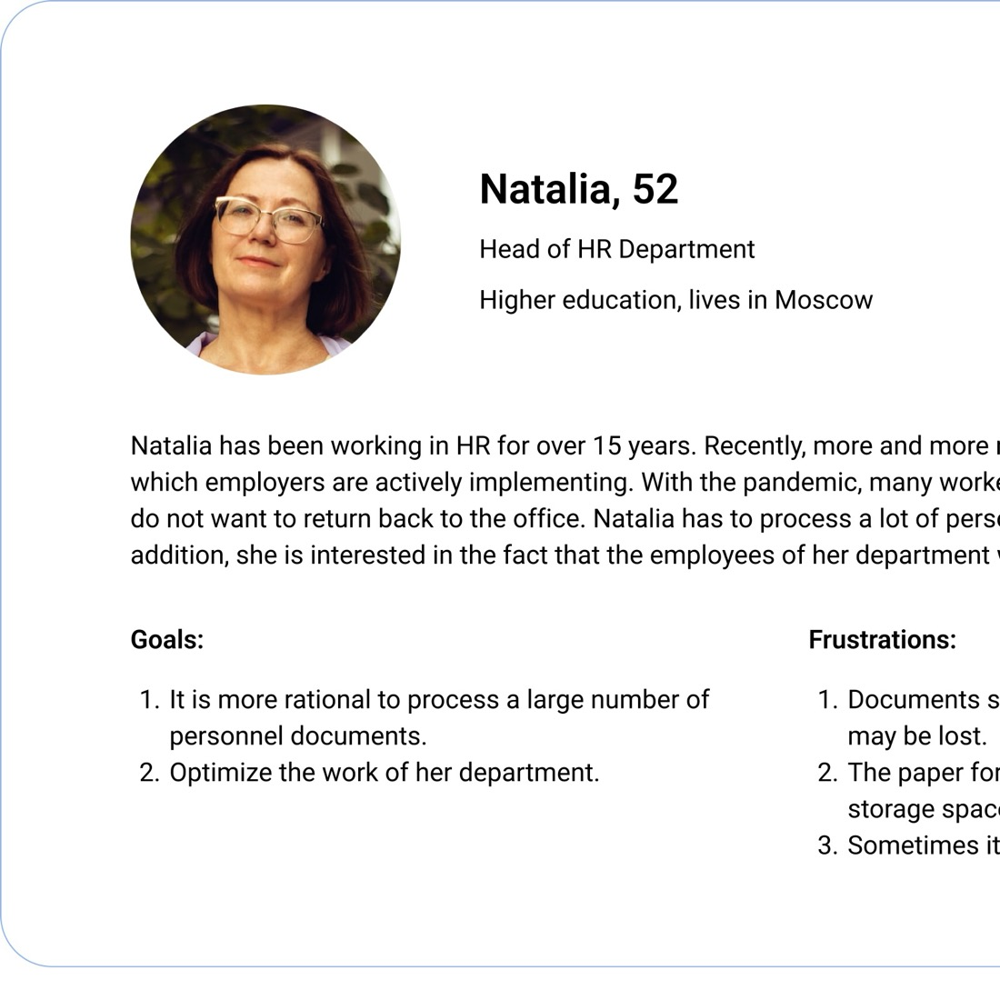
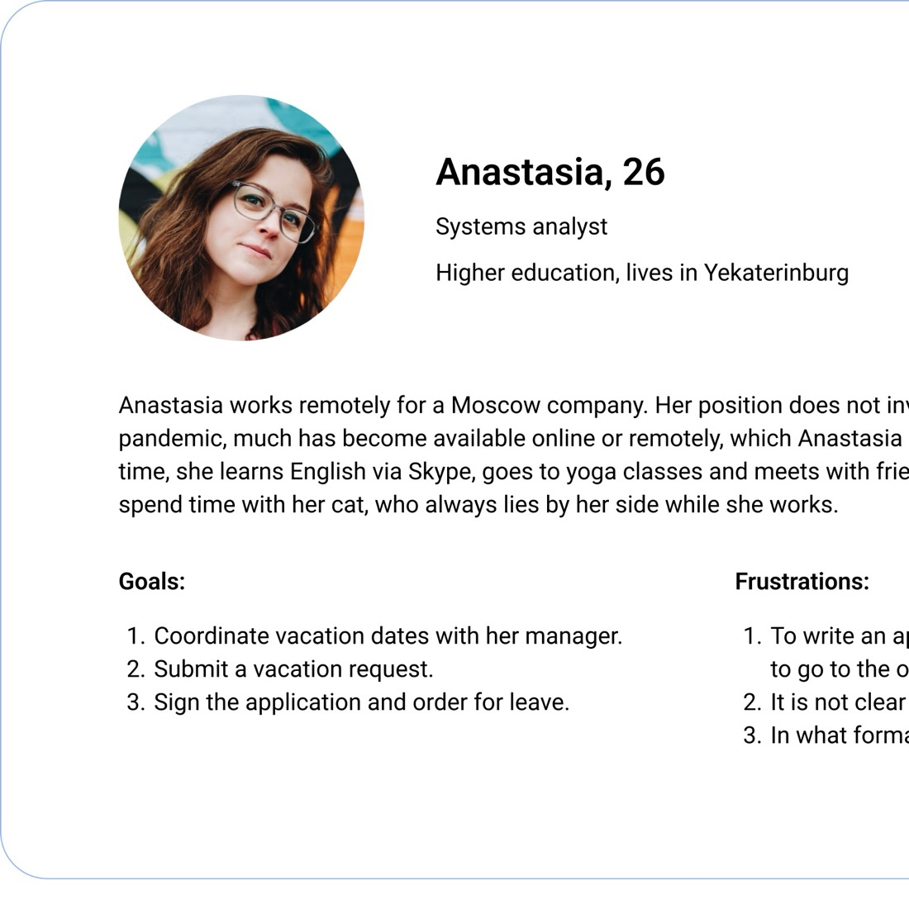

KEDO — enterprise HR document signing, as simple as email
A legally-valid e-signature platform for distributed teams — a flagship launch that onboarded 70+ companies in its first 5 months.
My role
UX/UI Designer — research, user flows, UI & design-system work [confirm exact scope]
Team
With a business analyst, the in-house HR team & frontend engineers
Timeline
2021
Context
B2B SaaS for HR electronic document workflow
Overview
KEDO lets employers and employees exchange and sign HR documents remotely — replacing paper while staying legally compliant for signing and archival. It was a flagship product launch, and the design challenge was to make a heavily regulated process feel as simple as sending an email.
70+
enterprise companies onboarded in 5 months
[metric]
e.g. time-to-sign reduced / NPS / docs processed
✍️ Fill in & check Add one more concrete number if you have it (time saved per document, documents processed, NPS, retention). Also: were the named enterprise clients (e.g. Essity, Weigandt Consulting) shown publicly in the original deck? If yes, we can add logos; if under NDA, we keep them out.
The problem
Companies with distributed teams had no fast, legal way to sign and manage HR documents remotely. Paper meant cost, delay and storage overhead — but any digital replacement had to satisfy strict legal requirements for signing and archival. The product had to make a compliance-heavy process feel effortless to people who are not lawyers.
Research & discovery
I built this on real input, not assumptions, working closely with a business analyst and our HR team:
Market & competitor analysis (with the analyst) — mapped pain points, document types and what actually drives adoption of this kind of service.
User research — interviews and surveys with 4 HR professionals and 4 employees, plus broader online surveys, to understand real workflows on both sides of a document.
Continuous stakeholder loop — balanced legal and business constraints with user needs through constant communication.
Market & HR-process research — adoption drivers, barriers, and the most-needed document types

Persona — Natalia, Head of HR (the sender)

Persona — Anastasia, employee (the signer)
Goals
Make signing a legally-binding document feel like one safe, familiar step.
Drive org-wide adoption — the real metric is companies onboarded, not screens shipped.
Work equally well on desktop and mobile.
Key design decisions
1. A legally-valid e-signature in one confirmation, not a legal maze
Problem: e-signature is intimidating and legally loaded — the fastest way to lose a user.
Decision: "Create certificate" generates the agreement; the user confirms with a single SMS code.
Why: reduce a compliance-heavy, scary action to one trusted, familiar step.
2. Borrow the mental model of email
Problem: enterprise HR tools feel unfamiliar and slow adoption.
Decision: a table-based, responsive interface that mirrors email-client patterns — inbox, statuses, actions — across desktop and mobile.
Why: familiarity removes the learning curve, which is the real barrier to org-wide rollout.
3. Two-tier notifications — informed, not noisy
Decision: non-intrusive snackbars for action confirmations + a centralized, configurable Notification Center for system alerts and document-status updates.
Why: document status is high-stakes in HR; people need to trust they'll be told what's happening without being spammed.
4. A guided send-document flow
Decision: upload → name → select type → review auto-configured routing → sign via SMS → receive status — a multi-step compliance process presented as one linear, safe path.
5. Designed on (and extended) the design system
Decision: worked within the product's guidelines and design system to prototype faster and keep consistency [and added mobile guidelines / reduced UX-debt backlog — confirm this belongs to KEDO].
Decision 1 — signing with a single SMS codeDecision 3 — two-tier notifications & document status
Decision 2 — an Inbox / Sent dashboard borrowed from emailDecision 4 — the send-document flow, mapped end to end
Validation → iteration
At MVP I ran usability testing with internal users. Sending a document tested well, but search performance scored poorly — so it became its own redesign track. The point: the test changed the product, not just confirmed it.
💡 Improvement idea If you have it, add the before/after of the search redesign as a mini-section — "test found weak search → I redesigned it → result" is exactly the kind of closed loop interviewers probe for.
Outcome
70+ companies adopted KEDO in the first 5 months after launch.
Named enterprise deployments: [Essity, Weigandt Consulting — if public].
✍️ Your input — 2–4 lines What's different about designing a regulated B2B product vs consumer? What the weak-search finding taught you about how enterprise users actually work? You can also mention here that you mentored junior designers — leadership is a plus.